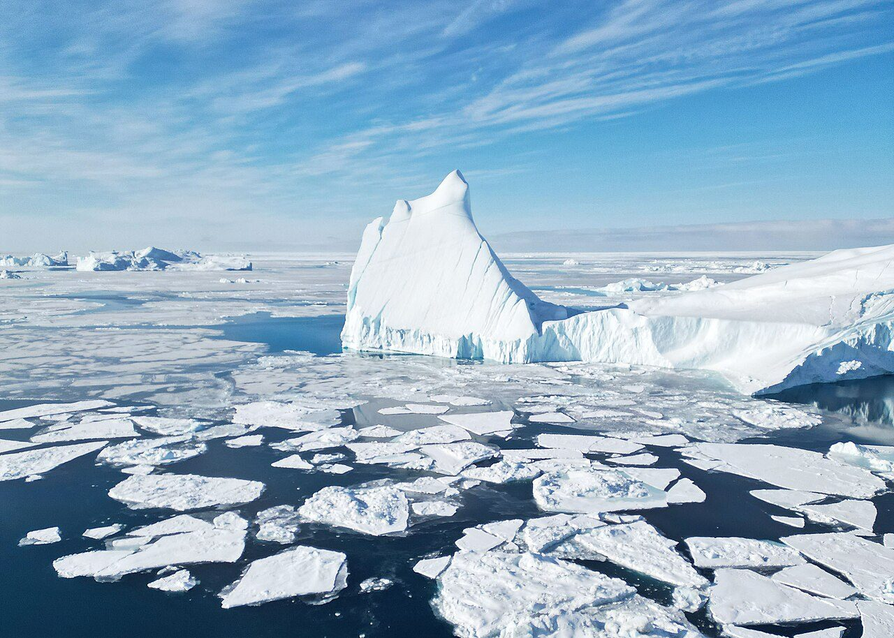

La mappa spiega · Geopolitica
Perché tutti vogliono la Groenlandia
Da più di un secolo e mezzo gli Stati Uniti provano a comprare l'isola più grande del mondo. La geografia spiega perché.

Un'isola contesa da lontano
La Groenlandia è l'isola più grande del mondo e fa parte del Regno di Danimarca, con un ampio governo autonomo. Eppure, a più riprese, gli Stati Uniti hanno provato a comprarla.
I tentativi
Già nel 1867, dopo l'acquisto dell'Alaska dalla Russia, il segretario di Stato William Seward valuta l'idea di acquistare Groenlandia e Islanda, senza però arrivare a un'offerta formale. La prima proposta ufficiale arriva nel 1946: il 14 dicembre il segretario di Stato James Byrnes offre alla Danimarca 100 milioni di dollari in oro. Copenaghen rifiuta, e la vicenda resta segreta fino al 1991, quando la rivela un quotidiano danese.
Cosa dice la mappa
Il motivo è soprattutto geografico. La Groenlandia si trova tra il Nord America e l'Europa, lungo la rotta più breve tra Stati Uniti e Russia, che passa sopra l'Artico. Per questo la Danimarca ha permesso agli Stati Uniti di costruire basi militari sull'isola: oggi ne resta una, la base spaziale di Pituffik, un tempo chiamata Thule. A questo si aggiunge lo scioglimento dei ghiacci, che rende più accessibili nuove rotte di navigazione e risorse del sottosuolo.
Il dibattito di oggi
Dal 2019 il tema è tornato più volte nel dibattito politico americano, con nuove dichiarazioni sull'interesse a ottenere l'isola anche nel 2025 e nel 2026. Le autorità della Groenlandia e della Danimarca hanno sempre risposto nello stesso modo: l'isola non è in vendita.
Da sapere: sulle carte geografiche più comuni, quelle con la proiezione di Mercatore, la Groenlandia appare molto più grande di quanto sia in realtà, perché questa proiezione ingrandisce le terre vicine ai poli.
Fonti
- WRAL / Associated Press: The US has tried to acquire Greenland before, and failed
- Fortune, 8 gennaio 2026: The secret history of American efforts to acquire Greenland
Questo articolo è stato scritto con l'intelligenza artificiale e verificato sulle fonti indicate. Hai trovato un errore? Segnalalo sui nostri social: le correzioni vengono pubblicate qui con la data della modifica.